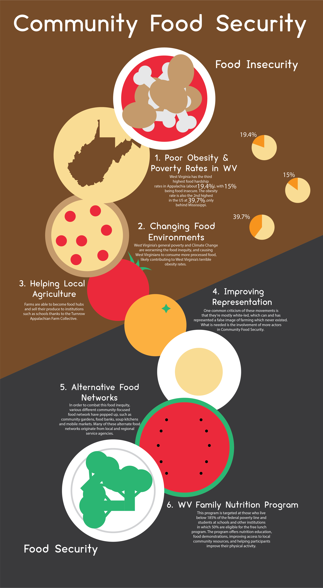

This was an infographic I created to bring awareness
to West Virginia's not so great reputation regarding
healthy eating, at least the time the infographic was made.
The Right Foot In The Door

The design for the infographic mockup wasn't based on anything particular,
instead going for a straightforward path from unhealthy to healthy eating.
The Finish Line
The background colors changed a few times during production, going from
blue to orange and black and finally to the colors show here. Some of the
foods were also changed to avoid conflicting with the new background colors.